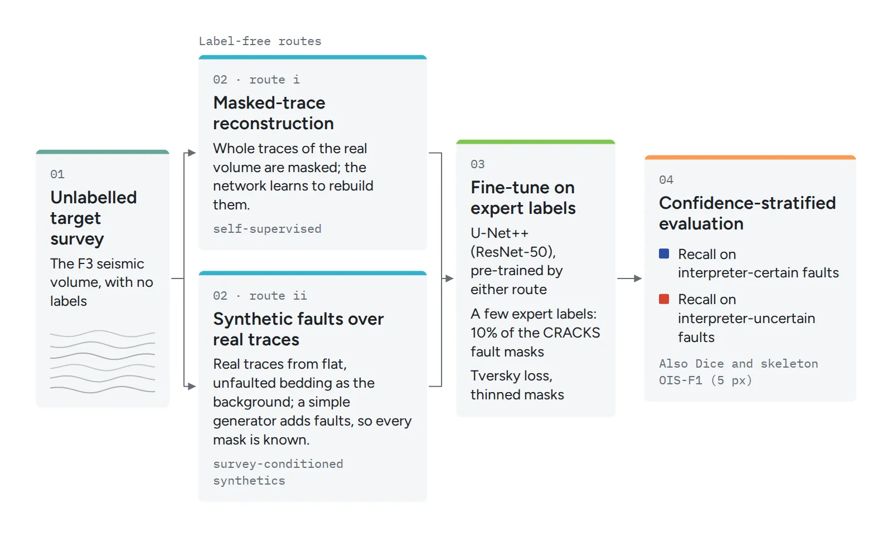
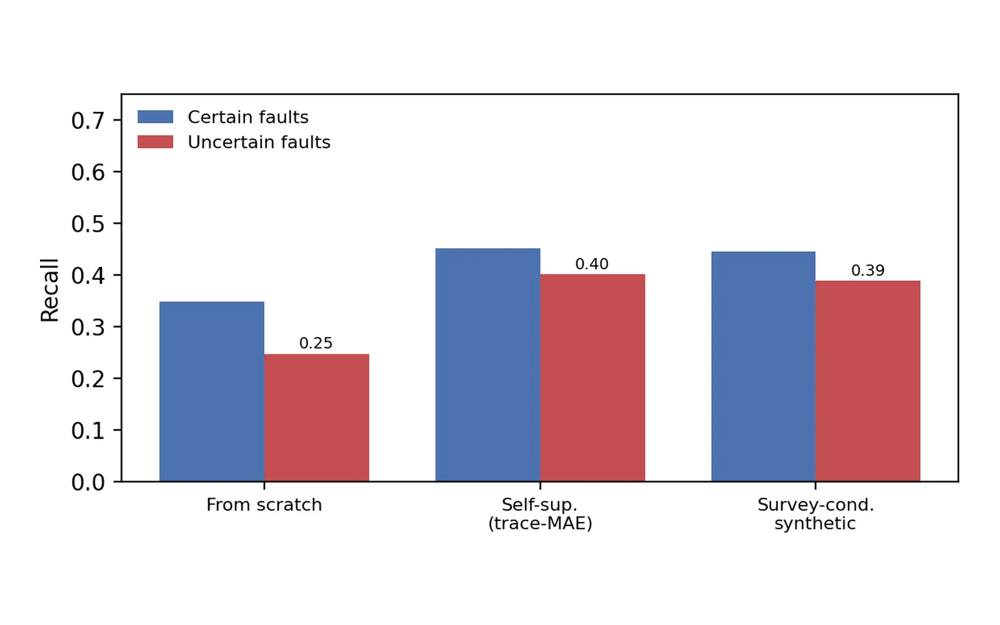

PhD research: deep learning for seismic interpretation
My PhD in Geophysics at UNSW Sydney (May 2024 to June 2028) asks how to make deep learning useful for seismic interpretation when expert labels are scarce. One strand trains fault detectors with a tenth of the labels by pre-training on the unlabelled survey. The other finds where 3D relative geologic time (RGT) networks trained on synthetics break on real data. Both rest on synthetic training data, so I also work on making that data geologically realistic, physics-based and matched to real surveys.
The big picture
The thesis is called "Fusing Geophysical Datasets to Characterize Rock Mass From Multiple Datasets using Deep Learning Algorithms". Finding oil and gas is slow, expensive and uncertain. An offshore exploration well now costs more than A$130 million on average, it takes over seven years to get from a first hypothesis to drilling, and only about one high-impact well in five is a commercial success.
The aim is one deep learning framework that reads seismic, well logs and core images together and returns rock properties such as porosity, permeability and saturation, with maps of how uncertain they are. Physical constraints keep the predictions consistent with rock physics.

The work runs in four steps:
- Generate synthetic seismic, well logs and rock properties with aligned labels.
- Set a baseline with classical machine learning.
- Classify facies and predict petrophysical properties with physics-informed networks.
- Validate on real data from public Australian and Norwegian archives.
The fault and RGT work below builds the structural model, and the synthetic data work feeds every step.
The problem
Expert fault labels are rare, costly and often inconsistent between interpreters. The CRACKS dataset labels the same Netherlands F3 sections with several interpreters and marks every fault as certain or uncertain. The usual workaround is pre-training on synthetic data, with ever more complex generators. Meanwhile the real target survey sits unused because it has no labels.
RGT has a related gap. An RGT volume gives every voxel a relative age of deposition, so one volume yields all horizons. Deep learning RGT models are trained on synthetic volumes with almost no unconformities and never see real seismic.
Approach

Fault detection. I condition pre-training on the unlabelled survey in two ways. The first is self-supervised: mask whole traces of the real F3 volume and reconstruct them. The second is survey-conditioned synthetics: backgrounds built from real F3 traces from flat, unfaulted bedding, plus a simple fault generator. The fault mask is exact and realism comes from the data, not the generator.
A U-Net++ (ResNet-50) is then fine-tuned on a few CRACKS labels with a Tversky loss, following the CRACKS benchmark protocol. The model trains on certain faults, and recall is measured separately on certain and uncertain ones. As far as we know, no earlier CRACKS study has split results by annotation confidence.
RGT. I ran a systematic evaluation of an existing trained 3D HRNet RGT model (76.8 M parameters, trained on 2,000 synthetic 512³ volumes, accepts sparse horizon picks as guidance). I tested it zero-shot and with three kinds of horizon guidance on held-out Wu synthetics, F3 (unconformities) and Thebe on the North West Shelf of Australia (faults). A memory-lean rewrite of its last decoder block lets a full 400 × 512 × 512 volume run on one 16 GB GPU in 2.2 s.
Results
The fault numbers are preliminary. The study continues with more seeds, label fractions and a held-out survey.
At a 10% label budget, both label-free routes barely move Dice (0.285 from scratch, 0.292 self-supervised, 0.295 survey-conditioned). They nearly double recall on interpreter-uncertain faults, from 0.25 to 0.40 and 0.39. Connectivity also improves, with skeleton OIS-F1 rising from 0.56 to 0.61 and 0.65. With 10% of the labels, the survey-conditioned model gets close to training from scratch on all labels (Dice 0.295 against 0.316).


The RGT model fails exactly at discontinuities. On F3, isochrons run a median 10.8 samples (43 ms) below the Truncation unconformity instead of terminating on it. On Thebe, it breaks the RGT at 92% of fault crossings but restores the wrong throw. Horizons correlate across faults at r = 0.11, against 0.47 for unfaulted pairs, and 33% of crossings skip a cycle. Guidance cuts horizon error on synthetics from 4.05 to 0.74 samples but does not fix the F3 unconformity. A likely cause is that hints enter the network at a quarter of its resolution.

The next step is full-resolution guidance, synthetic training data with a hiatus in the RGT label, and self-supervised 3D pre-training on public Australian seismic. For the data I built a workbench that runs seven open geological generators behind one validated contract. Along the way I fixed upstream bugs that silently corrupted training data.
Synthetic data that behaves like real geology
A growing part of the PhD is about the training data itself. This work is in progress, so here are the directions and a few views rather than results.
Geological realism. Synthetic volumes start from a geological model. I compare open generators with the structure of real sedimentary basins and build geomodels with realistic layering, faulting and relative geologic time.


Physics-based modelling. Rock properties are sampled as distributions and passed through rock physics, so the seismic response follows real relations between porosity, clay, fluids, velocity and density. The seismic is then simulated with several engines, from 1D convolution to full wave propagation. I built a seismic viewer to inspect the models layer by layer.


Sim-to-real. Before training, the generator is tuned so its data match a target survey in spectrum, wavelet, amplitudes, noise and reflector geometry. The model then meets real data it has already seen statistically.

Interpreters in the loop. I also test how a fault model can take a few edits from an interpreter and carry them across a survey, so a correction in one place improves predictions elsewhere.
My role
I am the first author of the fault-detection study, supervised by Prof. Stuart Clark and Prof. Ryan Armstrong, with co-authors P. Makuluni and N. Khalili. I designed the study, built the pipeline, ran the experiments and wrote the abstract. On the RGT strand I designed and ran the evaluation of the existing model, wrote the memory-lean inference rewrite, built the generator workbench and wrote the research plan.
Stack
- Python
- PyTorch
- CUDA
- U-Net++ (ResNet-50)
- 3D HRNet
- Masked autoencoders
- Tversky loss
- Synthetic seismic generation
- FastAPI
- Docker Compose
- RTX 5080 (16 GB)
Outputs
- ASEG DISCOVER Symposium 2026, Cairns: extended abstract and short talk, "Survey-conditioned pre-training for label-efficient seismic fault detection", V. Alekseev, P. Makuluni, R. T. Armstrong, N. Khalili, S. R. Clark. Talk on 28 October 2026.
- AEGC 2025, Perth: poster, "Generation of synthetic data for enhancing seismic imaging using deep learning". With my supervisors, September 2025.